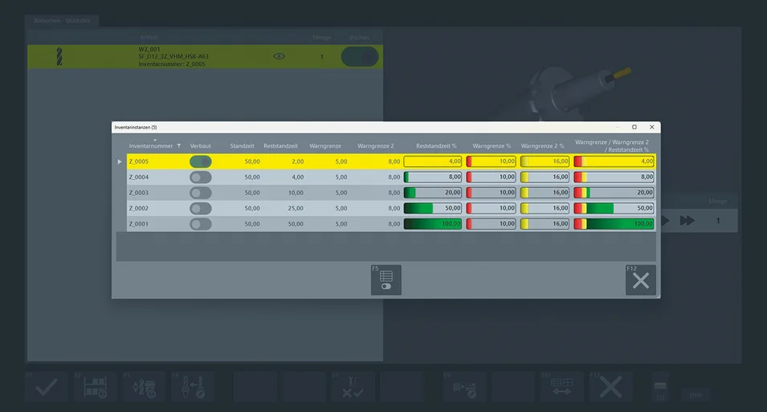
Gestión de la vida útil con función de estadísticas integrada
Add-on »z.Connectivity« - Conexión digital integrada entre la medición de herramientas, la administración de herramientas y la máquina - Transferencia segura...
ZOLLER TMS, junto con el complemento »z.Connectivity«, establece con »zidCode 4.0« una conexión digital continua entre la medición de las herramientas, la gestión de herramientas y la máquina. Los datos de herramientas se asignan de forma unívoca, están siempre actualizados y se transfieren sin errores al control CNC. Los datos se gestionan digitalmente a través de aplicaciones e interfaces, mientras que funciones como »z.Stats« y »flash« garantizan la transparencia desde la máquina hasta el almacén. De este modo, se evitan las entradas manuales, se estabilizan los procesos y se garantiza la producción de forma sostenible.

Disponibilidad de datos en tiempo real con datos de herramientas siempre actualizados
La identificación unívoca de las herramientas evita confusiones
Transmisión automatizada de datos para garantizar una entrada de datos sin errores en todo momento
| Navegador web | Escritorio | |
| zidCode* | ― | ― |
| Software zidCode* | ― | ● |
| »zidCode 4.«0* | ● | ― |
| »z.«Stats* | ● | ― |
| Gestión de la vida útil (tecnología RFID/tecnología »z.DMI«) | ― | ● |
| Monitoreo de la vida útil »flash« (tecnología »z.DMI«) | ― | ● |
| Postprocesadores | ― | ● |
| Consulta de almacén | ― | ● |
| Introducción de los datos/salida de datos/DNC, incluido generador de formatos | ― | ● |
* Solo se puede utilizar con hardware adicional ● Básico ― no disponible

Gestión de la vida útil con función de estadísticas integrada

Monitoreo de la vida útil »«flash»« con gestión y organización de herramientas de corte
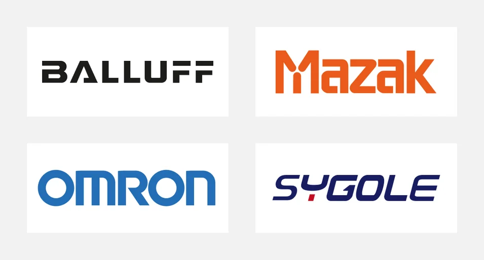
Identificación de herramientas basada en RFID con conexión directa a la máquina —por ejemplo, en soluciones de sistemas líderes—
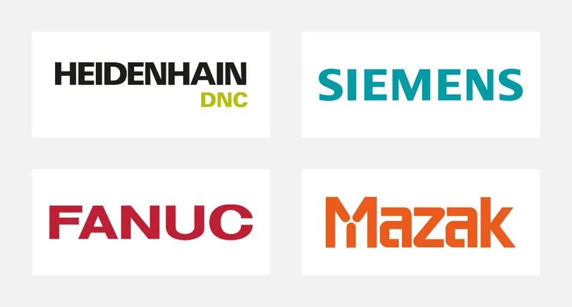
La tecnología »z.DMI« transfiere automáticamente los datos de herramientas directamente al sistema de control de la máquina, por ejemplo, en los principales sistemas de control CNC.
Gracias a este complemento, se consigue una transparencia total en todo el ciclo de vida de las herramientas, desde la máquina hasta el almacén.
El complemento permite iniciarse rápidamente en la digitalización.
El complemento permite la integración en las máquinas existentes sin necesidad de cambiar de sistema.
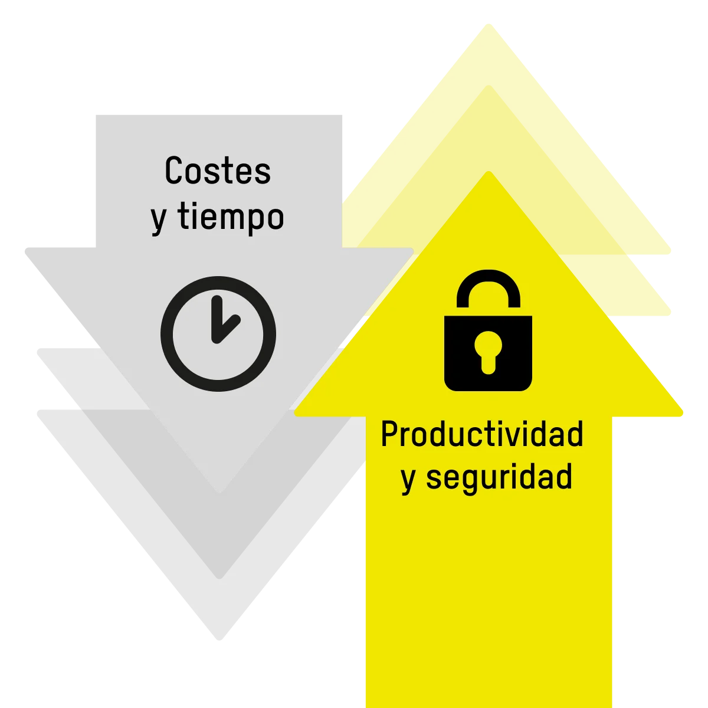
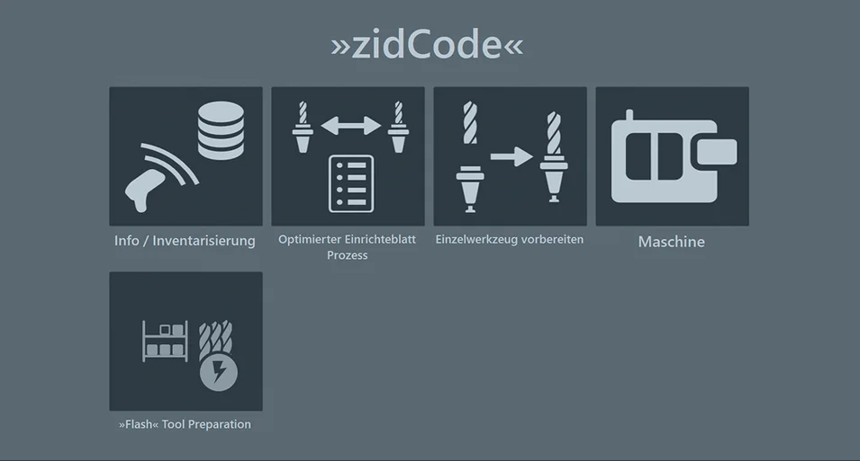
Transferir datos de herramientas de forma segura y rápida
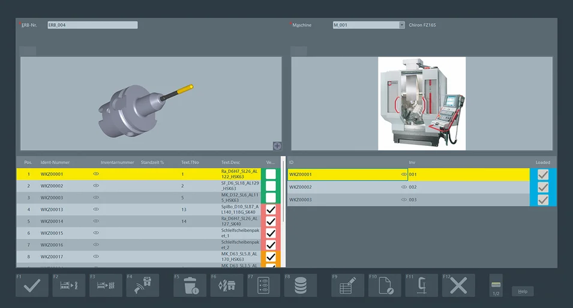
Proceso optimizado de hojas de ajuste para un flujo de datos continuo
Para una mayor seguridad y eficiencia gracias a un manejo sencillo de los datos de herramientas
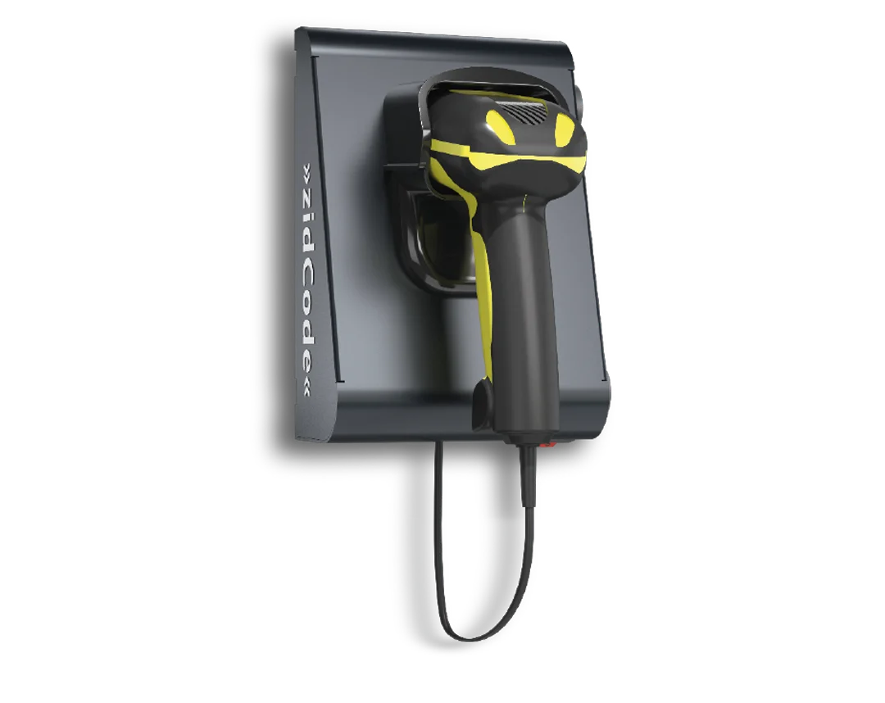
Con »zidCode 4.0«, los datos de herramientas están disponibles directamente en el proceso mediante un escaneo
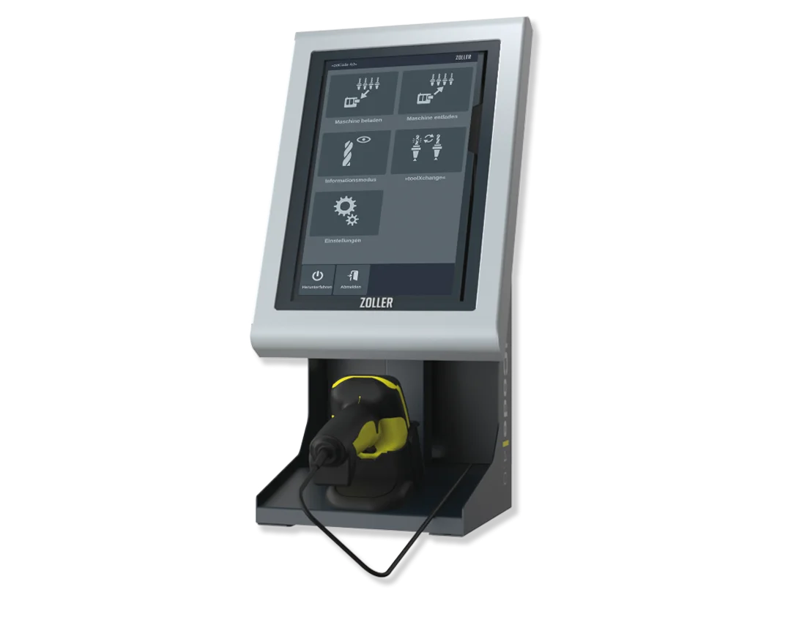
La tecnología »idChip« permite la identificación digital de herramientas para mayor eficiencia y seguridad
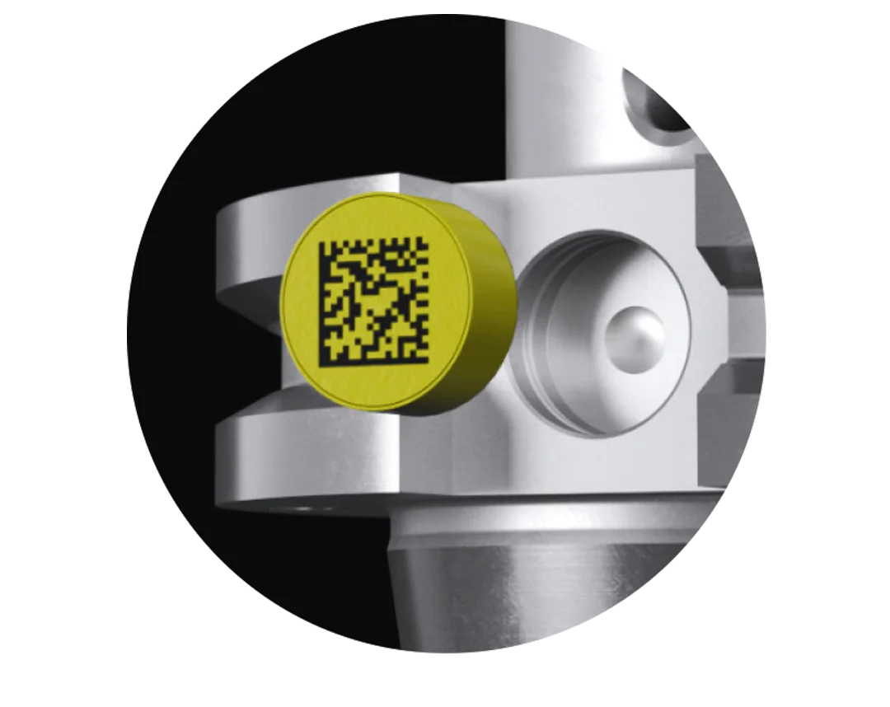
Transmisión rápida, sin contacto y confiable de los datos de herramientas a la máquina mediante RFID
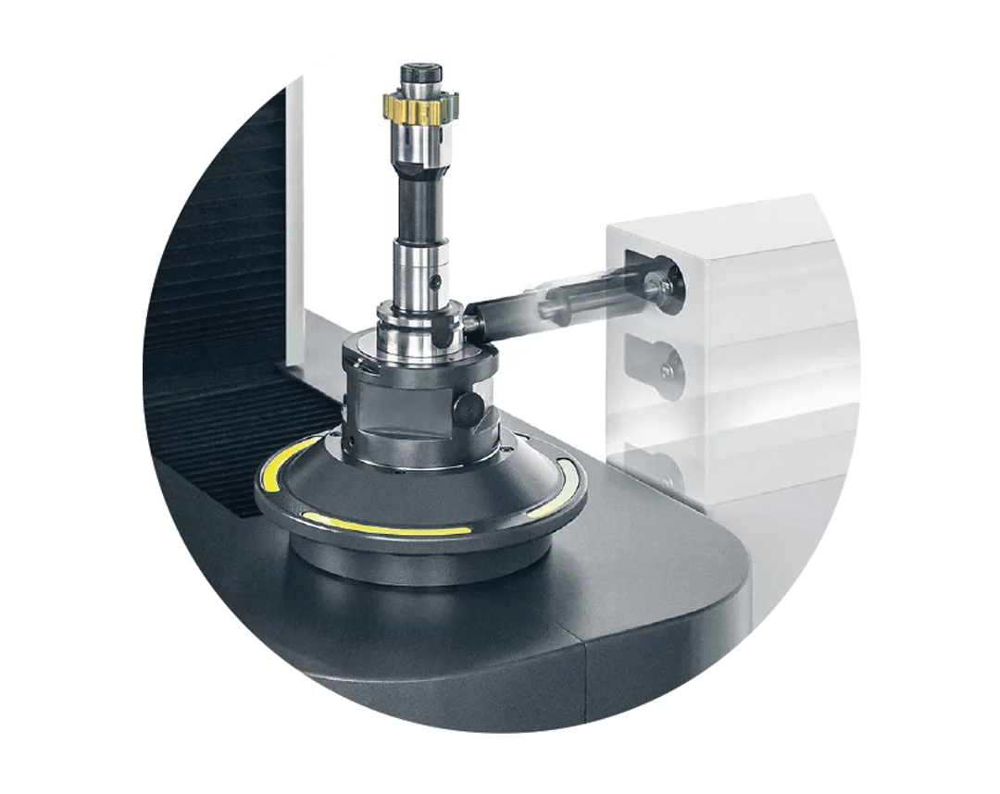

Descubra cómo la gestión de herramientas de ZOLLER aumenta su productividad de inmediato. Con los datos de herramientas, los procesos se ejecutan más rápido y de manera más segura, incluyendo protección contra choques para sus máquinas.

The individual exchange about your goals and our ideas for achieving them. Online advice from ZOLLER directly from the Smart Factory. Arrange your appointment now.